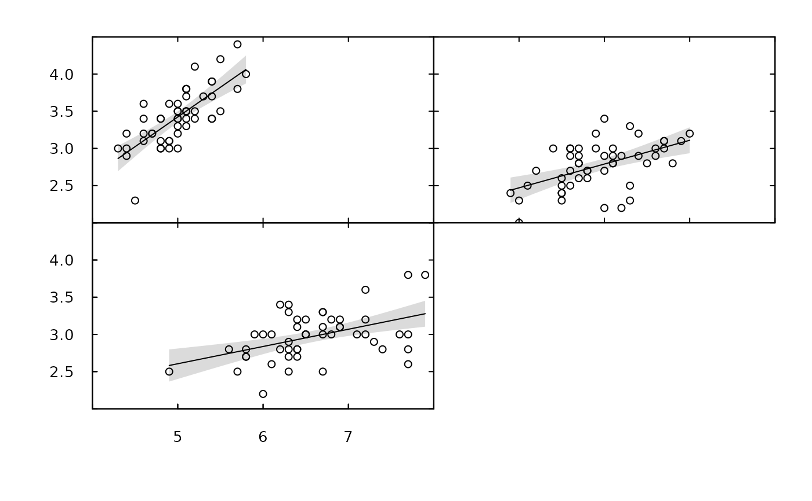
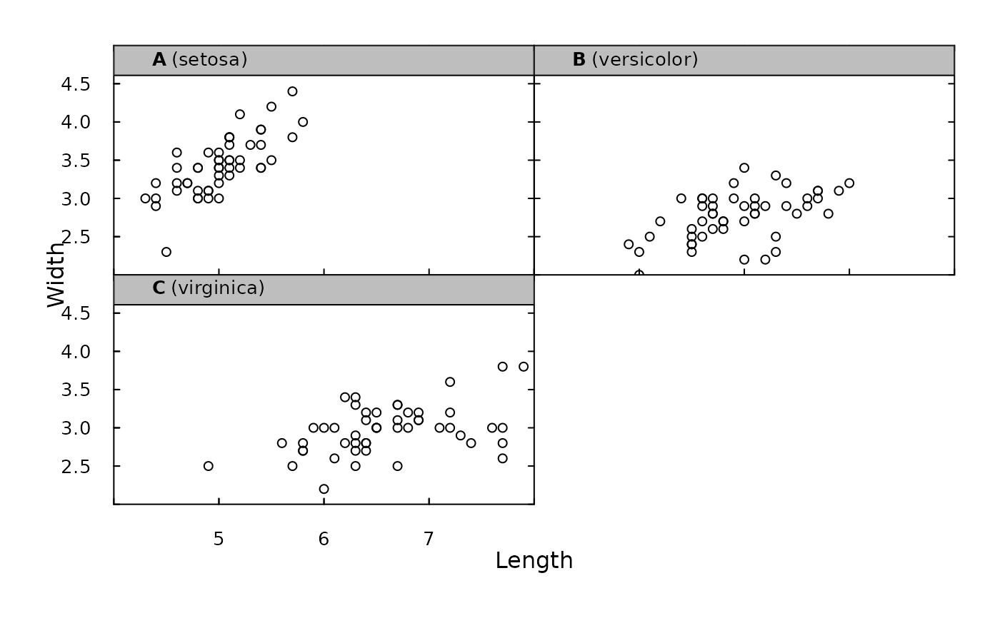
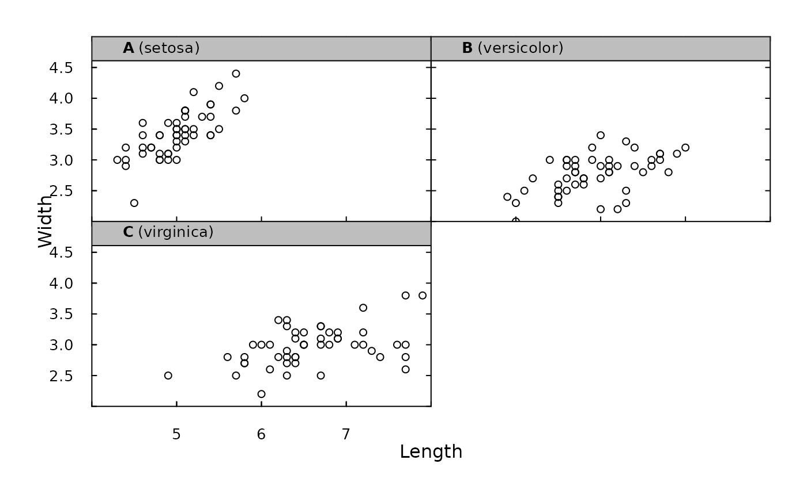
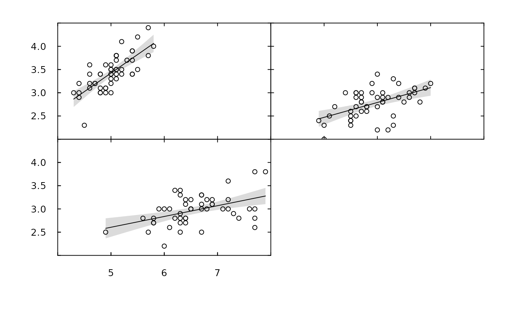
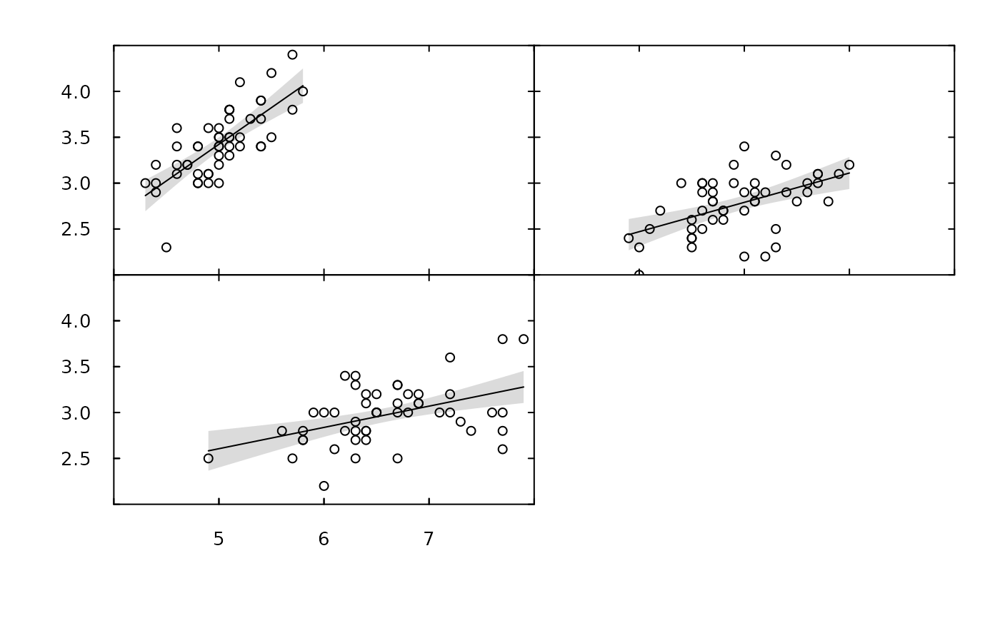

This function creates pretty multi-panel plots of y ~ x split by a grouping variable (by).
Arguments
- x, y, by
Vectors that define point coordinates (
x, y) and a grouping variable (by).- data
(optional) A dataframe that contains additional information (see
add_additional).- xlim, ylim, pretty_axis_args
Axis controls.
xlimandylimcontrol axis limits for all plots.pretty_axis_argsis a named list of arguments, passed topretty_axis, for further control.- add_xlab, add_ylab, add_main
(optional) Named lists of argument to add panel and axis titles.
add_xlabandadd_ylabare passed tomtextandadd_mainis passed tomtextifadd_main_box = FALSEorlegendotherwise. Panel titles are added to each panel, while only global labels are added for the x and y axes. Empty lists specify default arguments. In this case, panel titles are given as capitalised letters or numbers (if there are more than 26 predictors), in bold, plus the grouping level in brackets; e.g., A (Group One) or 1 (Group One). X and y axis labels are simply given asxandy. Afunelement inadd_mainis permitted which acts on group names (e.g.,italicviafunction(x) bquote(italic(.(x))))). Alternatively, names can be specified via the `text' argument tomtext.NULLsuppress these arguments.- add_main_box
A logical variable that defines whether or not to add the title for each panel in a box at the top of the panel.
- add_additional
A function used to add additional elements to each panel. This must accept two arguments, even if they are ignored: (1) a list of axis parameters (from
pretty_axis) and (2) the group-specific dataframe (see examples).- par_param
A list of arguments for
parto customise the plotting window. If unsupplied, default settings defined inside the function are used.- by_row
A logical variable that defines whether to order panels by row (
TRUE) or column (FALSE).- ...
Additional arguments passed to
pretty_plot.
Value
The function produces a multi-panel plot.
Examples
#### Example (1): Implement function using default options
pretty_panel(iris$Sepal.Length, iris$Sepal.Width, iris$Species)
#### Example (2): Control axes via pretty_axis_args, xlim and ylim
pretty_panel(iris$Sepal.Length, iris$Sepal.Width, iris$Species,
pretty_axis_args = list(side = 1:4),
by_row = FALSE)
#### Example (3): Control par via par_param and by_row
## Example using par
pretty_panel(iris$Sepal.Length, iris$Sepal.Width, iris$Species,
par_param = list(oma = rep(6, 4)))

if (FALSE) {
# Par arguments are reset unless supplied via par_param,
# ... so the following does not (currently) work:
pp <- graphics::par(oma = rep(6, 4))
pretty_panel(iris$Sepal.Length, iris$Sepal.Width, iris$Species)
graphics::par(pp)
}
## Example with by_row
pretty_panel(iris$Sepal.Length, iris$Sepal.Width, iris$Species,
by_row = FALSE)
 #### Example (4): Add titles
pretty_panel(iris$Sepal.Length, iris$Sepal.Width, iris$Species,
add_xlab = list(text = "Length", line = 2),
add_ylab = list(text = "Width", line = 2),
add_main = list(adj = 0))
#### Example (4): Add titles
pretty_panel(iris$Sepal.Length, iris$Sepal.Width, iris$Species,
add_xlab = list(text = "Length", line = 2),
add_ylab = list(text = "Width", line = 2),
add_main = list(adj = 0))
 
#### Example (5): Use add_additional(...) and ... to add additional elements
## Scenario: We will plot predictions from a model of sepal width ~ length for each spp
# Fit model
mod <- lm(Sepal.Width ~ Sepal.Length * Species, data = iris)
# Define function to add predictions that depends on:
# ... axis parameters
# ... group- (species-) specific data
add_pred <- function(.axis_ls = NULL, .data){
n <- 100
xlim <- range(.data$Sepal.Length)
nd <- data.frame(Sepal.Length = seq(xlim[1], xlim[2], length.out = n),
Species = factor(rep(.data$Species[1], n),
levels = levels(iris$Species)))
p <- predict(mod, newdata = nd, se.fit = TRUE)
ci <- list_CIs(p)
add_error_envelope(x = nd$Sepal.Length, ci = ci)
points(.data$Sepal.Length, .data$Sepal.Width)
}
# Make plot
pretty_panel(iris$Sepal.Length, iris$Sepal.Width, iris$Species,
data = iris,
add_additional = add_pred,
type = "n")

#### Example (5): Use add_additional(...) and ... to add additional elements
## Scenario: We will plot predictions from a model of sepal width ~ length for each spp
# Fit model
mod <- lm(Sepal.Width ~ Sepal.Length * Species, data = iris)
# Define function to add predictions that depends on:
# ... axis parameters
# ... group- (species-) specific data
add_pred <- function(.axis_ls = NULL, .data){
n <- 100
xlim <- range(.data$Sepal.Length)
nd <- data.frame(Sepal.Length = seq(xlim[1], xlim[2], length.out = n),
Species = factor(rep(.data$Species[1], n),
levels = levels(iris$Species)))
p <- predict(mod, newdata = nd, se.fit = TRUE)
ci <- list_CIs(p)
add_error_envelope(x = nd$Sepal.Length, ci = ci)
points(.data$Sepal.Length, .data$Sepal.Width)
}
# Make plot
pretty_panel(iris$Sepal.Length, iris$Sepal.Width, iris$Species,
data = iris,
add_additional = add_pred,
type = "n")
 
